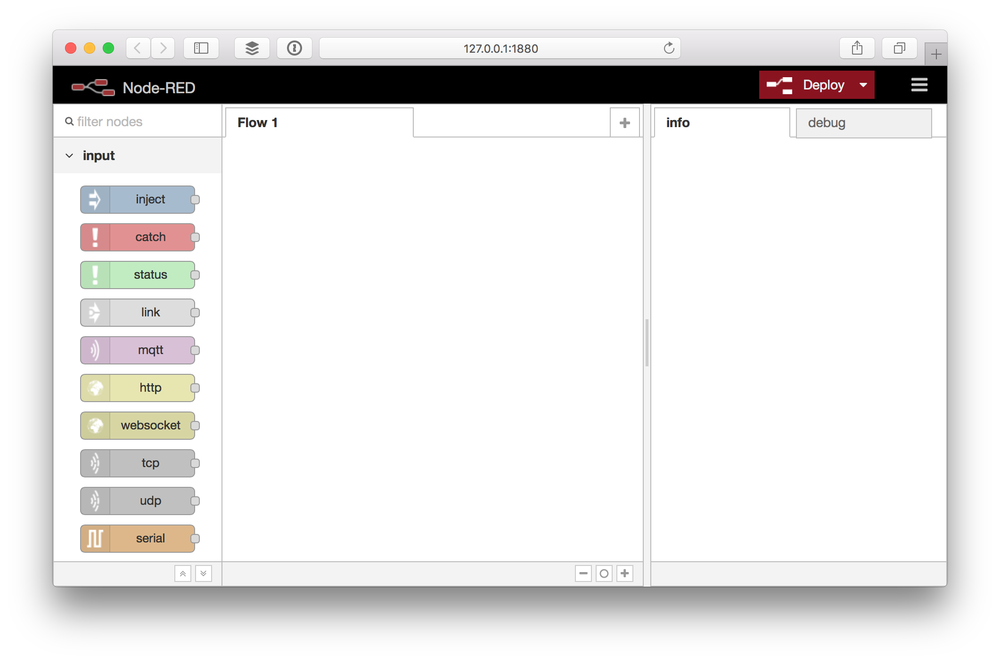
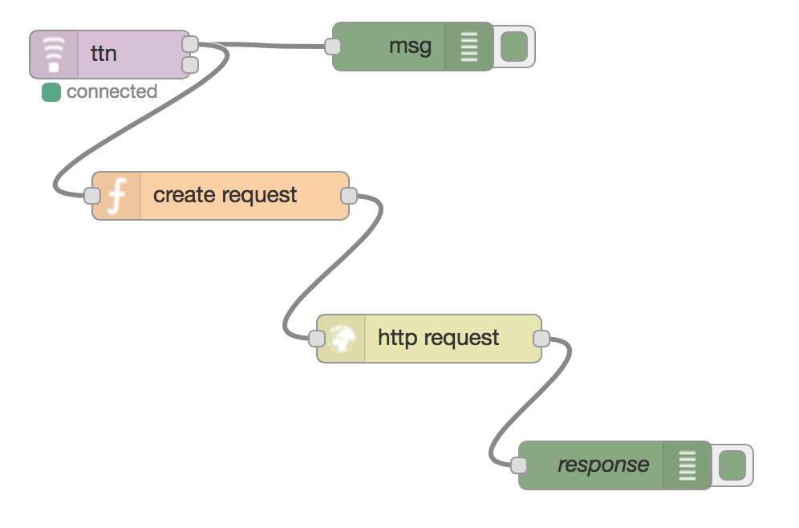

Node-RED
Node-RED is a free, JavaScript-based server and web GUI for wiring together hardware devices, APIs and online services.
With the Node-RED node for TTN it is very easy to process device messages and activations with pretty much no code.
Prerequisites
- Access to staging.thethingsnetwork.org.
- Access to an application with registered device on TTN.
- A Node-RED instance or server/computer to install it on.
- Version 0.x of the Node-RED node for TTN.
Setup
To get started we need to install Node-RED and add the TTN node, both via NPM.
Node-RED
-
Make sure you have Node.js and then install Node-RED:
sudo npm install -g --unsafe-perm node-redSee Node-RED’s Getting Started / Installation for details.
-
Run Node-RED:
node-redSee Node-RED’s Getting Started / Running for details.
-
Spot a line like this to know what URL to open in your browser:
29 Aug 11:13:01 - [info] Server now running at http://127.0.0.1:1880/You should see something like:

The Things Network node
-
Add the TTN node:
cd $HOME/.node-red npm install node-red-contrib-ttnSee Node-RED’s Getting Started / Adding Nodes for details.
-
Restart (
Ctrl+Cto stop) and re-open Node-RED in your browser.You should now see the ttn node in the sidebar:

Configure
To use the TTN node you need to configure it for your The Things Network Application.
Get your application keys
- Open a new browser tab and go to The Things Network Dashboard.
- Navigate to your application and then Application Info > Application data > learn how to get data from this app.
Use to show obfuscated keys. Use to copy the hex App EUI and base64 Access Keys.
Edit the TTN node
- In Node-RED, drag a ttn node from the input category in the toolbox on the left to your workflow.
- Double click the node to edit it.
-
Paste the App EUI and Access Key and click Done:

-
Click Deploy on the top right. The node should say it’s connected:

In the terminal you should see something like:
29 Aug 12:34:27 - [info] [ttn:f2d6214.9aaa5e] Connected to TTN application 70B3D57ED0000AFB
Test
Let’s verify if Node-RED receives your application messages.
Messages
Messages sent by devices on the application can be received via the upper output of the ttn node.
- Drag a debug node from the output category of the toolbox.
- Drag the upper output of the ttn node to the input of the debug node.
- Double click the debug node to edit it.
-
Click the gray part of the Output value, select complete msg object and click Done:

- Click Deploy.
- In the right sidebar select the debug tab.
-
Soon after a device sends a message to your application you should see it come in like this:

The output has the following format:
{ "payload": { "foo": "AA==" }, "appEUI": "70B3D57ED00001DA", "devEUI": "00000000973572D0", "counter": 38, "_msgid": "6e29afc4.91d65", "metadata": { "frequency": 868.32684, "datarate": "SF8BW125", "codingrate": "4/5", "gateway_timestamp": 1, "gateway_time": "2016-05-25T20:34:12.55856605Z", "channel": 0, "server_time": "2016-05-25T20:34:12.555147951Z", "rssi": -1, "lsnr": 1.4, "rfchain": 0, "crc": 0, "modulation": "LoRa", "gateway_eui": "0102030405060708", "altitude": 0, "longitude": 0, "latitude": 0 } }
Device activation events
Device activation events are sent from the lower node output.
Follow the same steps as for Messages to verify you get an output like:
{ "devEUI": "00000000973572D0" }
Build flows
Node-RED allows you to build all kinds of flows with basic business logic. You can add switches, triggers, custom functions and install thousands of nodes with additional functionality, for example storing data in a database.
You can find a lot of example flows and additional nodes in the Node-RED Library
Example: IFTTT
A common use case is to invoke a HTTP request to an external web service of your application. Here’s an example of how to forward the data to If This Then That (IFTTT) where we can link up other APIs.
You can find this full example in the Node-RED Library.
Create a Recipe at IFTTT
- Go to IFTTT and create an account or login.
- Go to Create a Recipe.
- Click this to configure the trigger.
- Search for
makerand click Maker to select it. - The first time you’ll need to click Connect, then Done in the popup and finally Continue to the next step.
- Click on Receive a web request.
- Enter an Event Name, e.g.
message. - Click that to configure the Action Channel.
- For now, let’s search for
emailand click Email to select it. - Click Send me an email.
- Click Create Action and finally Create Recipe to finish.
- Go to the Maker Channel to find your key.
Wire your Node-RED flow
- In Node-RED, drop a new function on the flow from the function category of the toolbox.
- Drag a wire from the upper output of the ttn node to the input of the new node.
- Double click the new node to edit it.
- Enter a Name like
create request. -
As the actual Function IFTTT expects a payload with
valueNlike:return { payload: { value1: msg.payload.raw } };This should look something like:

- Drag a http request node from the same function category.
- Drag a wire from the output of the create request node to the input of the http request node.
- Double click the new node to edit it.
- As Method select POST.
- For URL enter
https://maker.ifttt.com/trigger/{event}/with/key/{key}.- Replace
{event}with the Event Namemessageor what you decided to use in step 7 of setting up IFTTT. - Replace
{key}with the key you found at the Maker Channel in step 12.
- Replace
-
Click Done and you should now have something like:

-
Click Deploy and soon you should receive an email like:

You probably want to turn off the IFTTT recipe now, unless you like to be spammed.